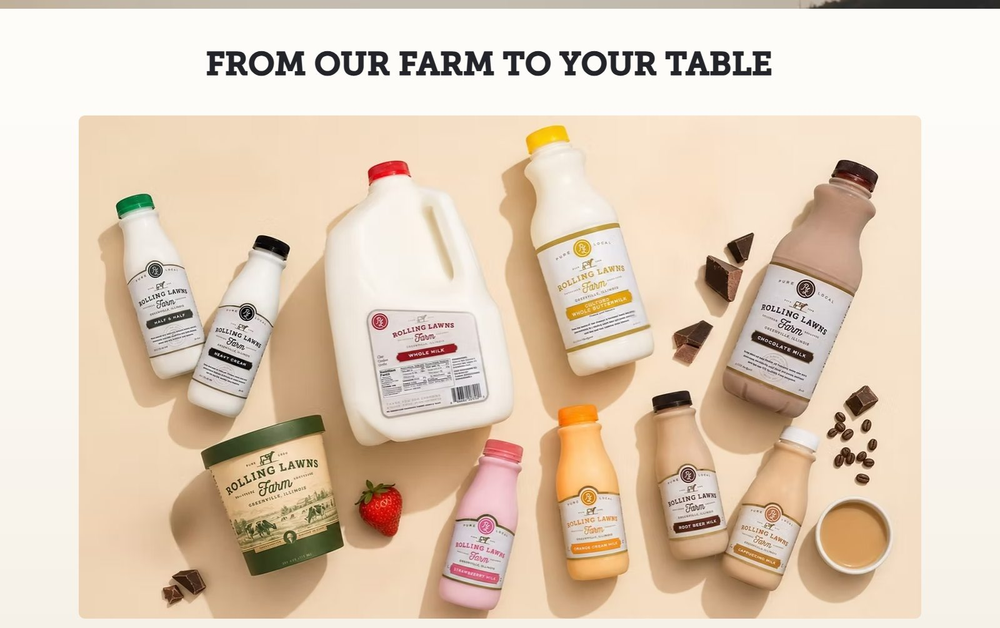

01
Client work · Built on Wix
Rolling Lawns Farm
A dairy farm in Greenville, Illinois that supplies milk and ice cream to markets and restaurants. The farm wanted the tours it runs at the barn and the Milk House to be easier to find, and the previous site was out of date and did not work on phones. The rebuild reorganised the page around the products and the tours, replaced the content, and made the layout responsive.
- Type
- Client work, live site
- Built with
- Wix, plus custom HTML and CSS in one section
- Scope
- Redesign, responsive layout, content update
Build notes
What the site covers
- The product range, the farm story, the tours, and a store locator.
- Parallax and hover treatments on the photography.
- A layout reworked section by section so it reads on a phone.
Custom code
One section uses four cards that tilt in 3D on hover. That is not something the Wix editor produces, so those cards are hand written HTML and CSS embedded into the page. Everything else on the site is built with Wix components.
